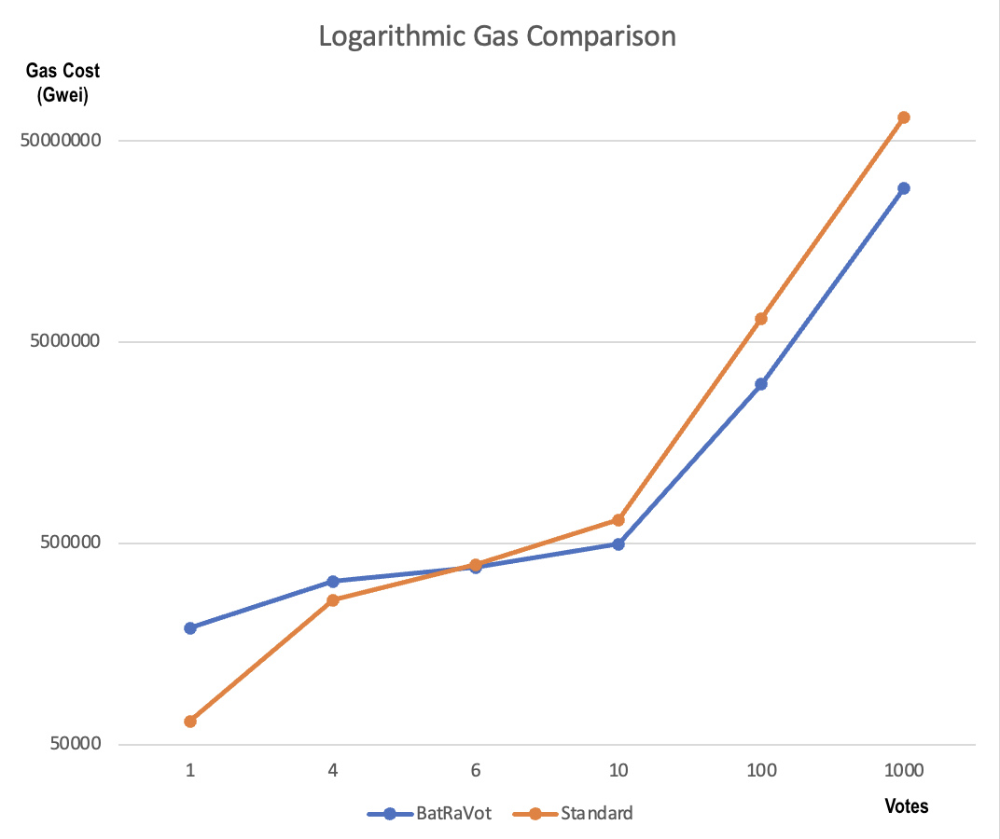
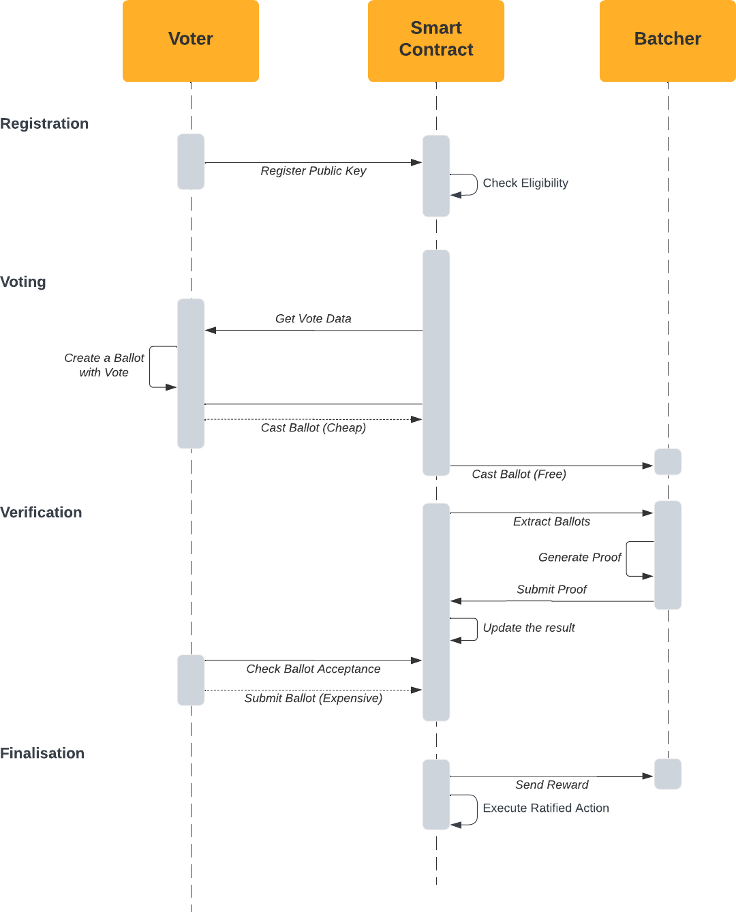

BatRaVot: Scalable Trustless Voting on Ethereum
2023-01-19 by Artem Grigor
In one of our recent blogposts Rebekah Mercer discussed how one can build decentralised scalable and private voting. Today we would like to talk about a practical implementation of one such protocol, originally proposed by Vincenzo Iovino and Matan Prasma as part of their paper SNARVs: Succinct Non-Interactive Arguments of Voting. Our implementation allows for scalable delegatale off-chain voting with on chain results on any EVM compatible chain. You can access the code here. The prototype works with ERC20 token based voting, however any alternative system can be implemented, such as ERC721, as well as different ways for weighting votes, such as one wallet one vote or token based. In the rest of the text we will delve deeper into this solution and explain how it works as well as how can be used to conduct efficient and secure voting on the Ethereum blockchain.
The Solution
The solution we will be discussing is a trustless voting protocol that allows for both on-chain and off-chain voting with on-chain results. This means that users can vote without incurring the high gas costs associated with on-chain voting by using Batchers. The user additionally has an option to vote on-chain as usual, needing external parties. The decision is up to the user and largely depends on their desire to pay fees and tolerance for censorship resistance. The protocol makes the results of the votes accessible on-chain in a smart contract. Furthermore, as the protocol only defines vote collection, one is free to reimagine how votes are counted as well as who is eligible to vote, making it a versatile solution for various types of voting scenarios.
The protocol can be summarised to provide a Cost Effective Way to Identify Voter Choices, allowing the rest to be programmatically defined for the use case. For example, we have provided a simple implementation of a token based voting system, however one can easily implement a voting system based on ERC721 tokens, or any other constraint.
The BatRaVot Protocol
The basic idea behind the BatchedRatifiedVoting is that there are three types of participants in the system: 1. The Voter wants to cast a vote in a referendum and prove to the Verifier that they have voted correctly. 2. The Batcher facilitates this process, by combining votes and their correctness proofs into a single concise proof, which is then submitted to the Verifier on behalf of the Voters. 3. The Verifier is a smart contract that verifies the correctness of the votes and updates the state of the referendum accordingly.
Regular On-Chain Voting
In regular on-chain settings, the voter is the owner of an Ethereum address, and the verifier is the Ethereum smart contract that checks for incoming transactions that mutate a state and cast a vote. However, in order to vote in this setting, one is required to create Ethereum transactions, which is costly.
New Proof of Voting
We introduce a new way for a voter to prove to a smart contract that they have voted for a particular option. We use cryptography to generate the proof, in particular, we resort to a modified BLS signature scheme to serve our need. This gives us a further advantage that proofs of votes from different voters can be combined into one. This is where the Batchers step in. The flexibility of our solution also allowed us to implement delegation of votes. This was achieved by using the fact that each voter in our system is identified using a public key not tied to a particular Ethereum address. This itself allowed us to connect multiple Ethereum address to one voting public key. You can read more about this here.
Batchers
Batchers can receive a number of votes from Voters and generate them into a one large vote proof. Now, instead of every voter needing to send a transaction to the blockchain, the Batcher can submit a single transaction for them. We actually saw that approach would take considerably less gas compared to verifying each signature one by one. In particular, we saw that already by aggregating 6 votes our protocol was more efficient than the OpenZeppelin Voting Standard. Please keep in mind that we have not made any optimisations, and we are not Solidity Professional Developers. After about 40 votes the batched method used twice as less gas, meaning that an amortised cost of one vote with our proposed protocol was twice as less. Please note that there are further optimisations that we could do to reduce this even further. And because of how the proofs are done, the batcher can not fake any result for any of the voters. The system is absolutely secure.
 Note that this is algorithmic scale, which does not show that well the fact that our solution is 200% more efficient.
Updating the State of the Referendum
Once the Batcher has submitted the votes, the state of the election is updated to represent information about these new votes. Such updates can happen multiple times, meaning there can be multiple Batchers submitting proofs simultaneously. Moreover, the protocol does not have any restriction on who can be a Batcher, meaning anyone can batch the vote proofs together. For example, if a user wants to avoid using a Batcher, they can submit their own proof to the Verifier directly. They will spend more gas in this case, but they will not have to work with any third party.
Final Result
We define a concept of closing an election, which is a point of time when no more proofs are accepted. Once the election is closed, the result is calculated using any custom logic of the smart contract. In our example, we have used the token based voting system, where the result is the sum of the votes of the tokens that have been used to vote. However, one can easily implement a voting system based on ERC721 tokens, or any other constraint.
 Here you can see how all the steps and parties work together.
Try it Yourself
You can already try the protocol yourself. Please note, that the current version is not audited and is meant to work only for demonstration purposes. To try it, please download the BatRaVot Rust Repository and follow instructions inside to start up the system. There you will be able to start a Voter application, that would allow you to create votes, as well as the Batcher application, that would allow you to batch the votes into a proof. The Verifier is already deployed to the Sepolia testnet, and you can find the address in the repository. You can also find the address of the token that is used for voting in the repository. Anyone can mint this token, so that you can test the voting system. Alternatively, you can redeploy the Verifier and set up your own token for voting.
Future Steps
We are currently working on several improvements to the protocol, including:
- Adding privacy to the protocol (to be researched in the future)
- Optimizing smart contracts
- Conducting a code and protocol security audit
- Building a web-based application for voters to integrate with wallets such as MetaMask
- Building a server-side application for aggregators to process ballots and generate votes
Learn More
To learn more about the protocol, please visit our code repository here or read our technical paper here.
We hope that this protocol will prove to be a useful tool for conducting efficient and secure voting on the Ethereum blockchain. Thank you for your interest in our project!